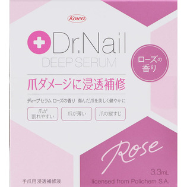
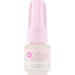

返回列表
产品名称：Ｄｒ．Ｎａｉｌ ディープセラムローズ

興和新薬 Ｄｒ．Ｎａｉｌ ディープセラムローズ ３．３ｍｌ
メーカー 興和新薬
JANコード 4987067476404
商品の特徴
爪が割れやすい、爪が薄い、爪の縦すじといった症状のある方がご使用ください。
健康で美しい地爪にしていきます。
成分・分量
【成分】
水、エタノール、ジメチルスルホン、プロピレングリコール、ヒドロキシプロピルキトサン、スギナエキス、エトキシジグリコール、香料
用法及び用量
【使用方法】
入浴後など清潔で乾いた爪に薄く塗布してください。
※水溶性のため、長時間水にふれない時（入浴後や就寝前など）のご使用が効果的です。